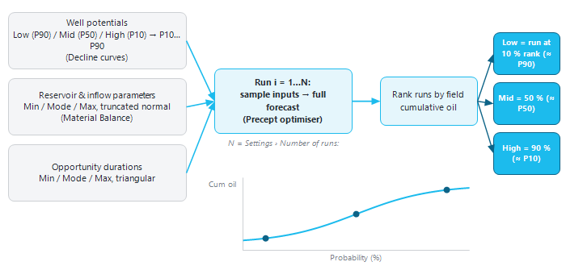
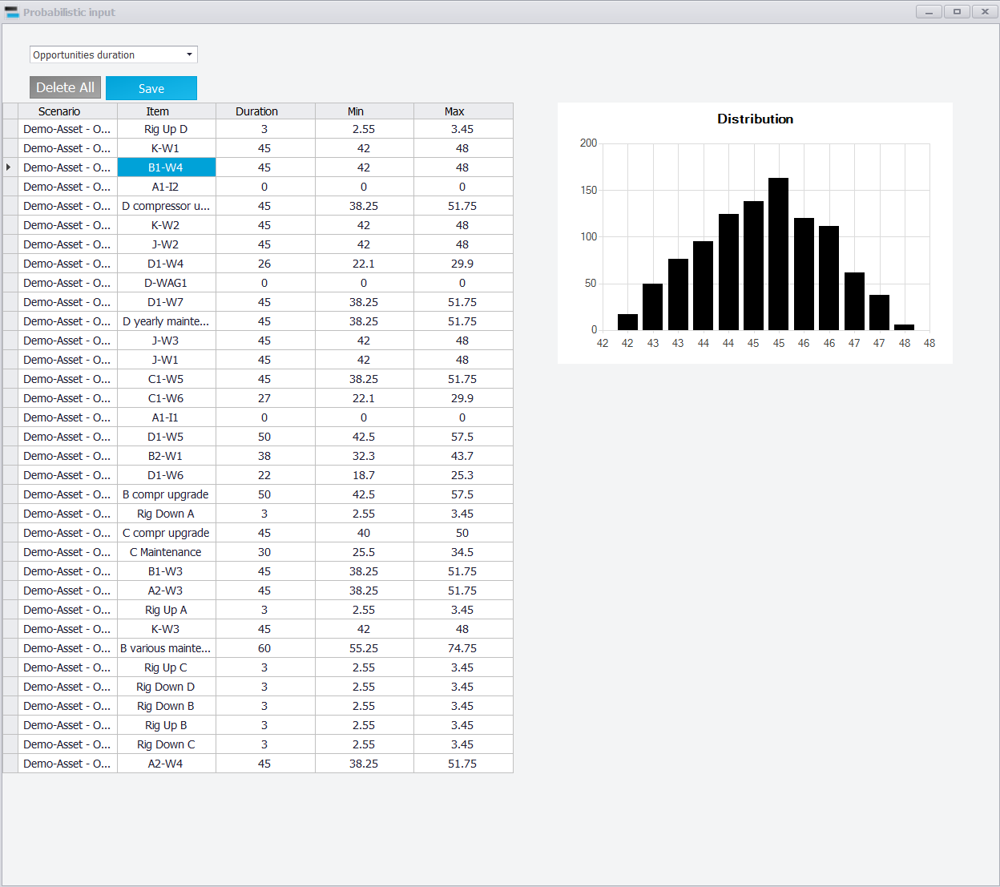
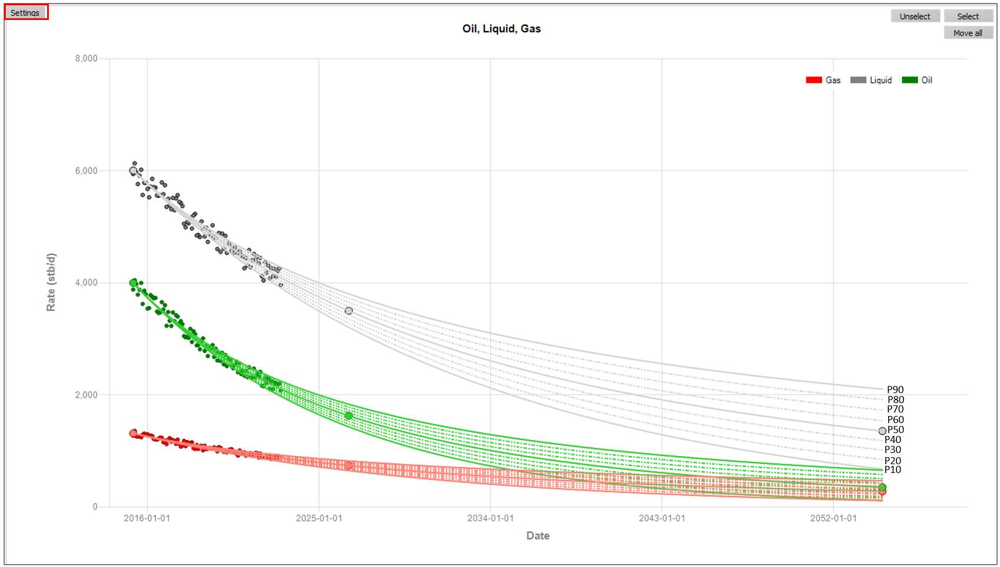
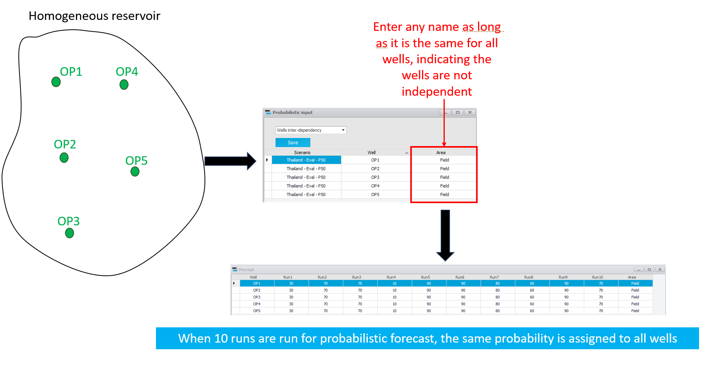
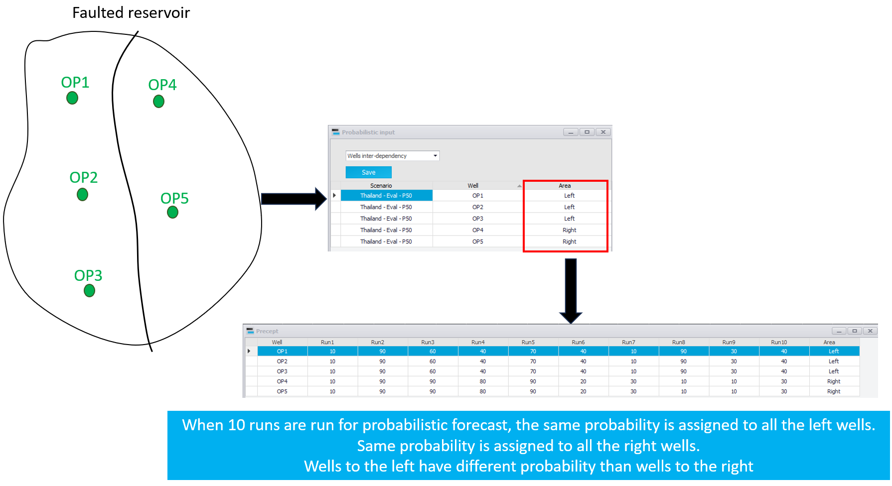
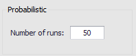

|
Probabilistic forecast
1. Overview
A probabilistic forecast is a series of complete forecasts of the same scenario (the "runs"). Each run is an ordinary forecast, solved with the Precept optimiser, but with its uncertain inputs drawn at random. The spread of the runs gives the range of outcomes, and Precept picks the Low, Mid and High runs from it.
Which inputs are uncertain depends on the scenario's "Decline" setting (see Settings):
•"Decline curves" — each well's potential is one of P10, P20, … P90, built from its Low, Mid and High decline cases (section 3). Wells can be tied together with "Wells inter-dependency" (section 4).
•"Material Balance" — reservoir inputs and well inflow parameters are sampled between a Min and a Max (section 6).
•In both cases, the duration of each opportunity can also be sampled (section 5).
What you need before running:
•the uncertain inputs and their ranges, entered in "Probabilistic distributions" (section 2);
•for a decline-curve scenario, the Low / Mid / High cases of the wells (section 3);
•the number of runs (section 7).

Figure 1 — How a probabilistic forecast is built: inputs are sampled for each run, every run is a full forecast, and the runs are ranked by cumulative oil to give Low, Mid and High.
2. The "Probabilistic distributions" window
Select the scenario, then click "Probabilistic distributions" in the "Expertise" group of the main ribbon. Choose the category in the list at the top left. Only the categories that apply to the scenario are offered:
•"Opportunities duration" — when the scenario has opportunities.
•"Material Balance" and "Well Inflow" — when "Decline" is "Material Balance".
•"Wells inter-dependency" — when "Decline" is "Decline curves".
For the range categories, the grid lists one row per uncertain input with its Mode and the Min and Max you enter:
•Mode is the current deterministic value. It is read-only here: change it where the input is defined (e.g. the opportunity duration in Opportunities).
•When Min and Max have never been entered, Precept proposes 70 % and 130 % of the Mode.
•Precept warns when a row does not respect Min < Mode < Max.
•Click a row to preview its range in the "Distribution" chart. If Min, Mode and Max are equal, the chart shows "Min, Mode and Max have same values".
•You can copy and paste Min / Max values within the grid or from Excel (Ctrl+C, Ctrl+V); the Delete key clears the selected cells.
•Click "Save". Ranges are saved per scenario.

3. Well potentials: Low / Mid / High cases (decline curves)
In a decline-curve scenario, each well can have three decline cases, built in the Decline Curves window with the "Low case", "Mid case" and "High case" options (see Decline curves: Production and Injection potentials):
•Low case = P90, Mid case = P50, High case = P10.
•"Copy Mid case to Low and High cases" and "Auto-forecast Low / High from Mid" help you start the Low and High cases from the Mid case.
•A well with no Low or no High case uses its Mid case instead.
Precept fills in the intermediate profiles by linear interpolation, point by point along the curves:
•P60, P70 and P80 are spaced in equal quarters between the Low (P90) and Mid (P50) curves.
•P40, P30 and P20 are spaced in equal quarters between the Mid (P50) and High (P10) curves.
To see the nine profiles of a well, open its decline chart, click "Settings", and tick "Probabilistic" in "Show / Hide parameters" (this also ticks "All cases").

In each run, every well is given one of the nine profiles P10, P20, … P90, each with the same probability (1 in 9). An incremental profile or a conversion follows the level drawn for its base well.
4. Wells inter-dependency
By default, the wells are drawn independently. That is not always realistic.
Example: five wells in one homogeneous reservoir. If the reservoir turns out poor, all five wells are poor together, so the field P90 is the sum of the wells' P90. Drawn independently, a run where all five wells get P90 has a probability of only (1/9)^5, and the field range comes out far too narrow.
To tie wells together:
1.In "Probabilistic distributions", select "Wells inter-dependency". The grid lists every well of the scenario.
2.In the "Area" column, type the same name for all the wells that behave together. Any name will do. Leave it blank for a well that is independent.
3.Click "Save".
In each run, all the wells of an area get the same level (for example P70 for all of them in run 3).

Second example: five wells in a reservoir cut by a sealing fault. The wells west of the fault behave together, and the wells east of it behave together, but the two blocks are independent. Give the two groups two different area names:

5. Opportunity durations
The expected duration of each opportunity is entered when the opportunity is created (see Opportunities). It is the Mode in the "Opportunities duration" grid, whose columns are "Mode Duration (days)", "Min Duration (days)" and "Max Duration (days)".
•In each run, the duration of each opportunity is drawn from a triangular distribution (Min, Mode, Max) and rounded to whole days.
•Every opportunity of the scenario needs a saved Min and Max. If one is missing, the run stops with "Error while loading probabilistic duration … please check !" and the Probabilistic distributions window opens. Opening "Opportunities duration" and clicking "Save" saves the proposed 70 % / 130 % ranges for any new opportunity.
•To keep an opportunity's duration fixed, set Min = Mode = Max.
6. Material Balance and Well Inflow parameters
When "Decline" is "Material Balance", two more categories are offered:
•"Material Balance" — any reservoir input, named "<Reservoir> , <parameter>" (for example "Main , OGIP").
•"Well Inflow" — each well's PI ("<Well> , PI"), or its c and n factors ("<Well> , c factor", "<Well> , n factor").
For each parameter, every run draws a value from a normal distribution truncated to [Min, Max]:
•the distribution is centred on the deterministic value (the Mode);
•its spread puts Min and Max at the 1 % and 99 % points (standard deviation = (Max − Min) / 4.65);
•a parameter whose deterministic value is 0 stays at 0.
This is the basis of material-balance history matching — see Material Balance, sections 9 and 10, for the workflow and the Material Balance dashboard.
7. Number of runs
Click "Settings" in the "Forecast" group of the main ribbon and enter "Number of runs:" in the "Probabilistic" box, then click "Save Settings". Use at least 10 runs: the results charts only shade the runs by rank from 10 runs. More runs give a smoother distribution, but each run is a complete forecast, so the time grows with the number of runs.

8. Running the probabilistic forecast
1.Select the scenario.
2.Click "Probabilistic" in the "Forecast" group of the main ribbon and answer Yes to "Are you sure you want to run Probabilistic forecast?".
3.Precept first deletes the scenario's previous probabilistic runs, then runs the forecast once per run. The deterministic run of the scenario is not touched.
4.At the end, a table shows the value drawn for each uncertain input (one row) in each run (one column: Run1, Run2, …). For a decline-curve scenario, the values are the P-levels (10 to 90) given to each well.
9. Viewing the results
Click "Charts" in the "Forecast Results" group and set the run type to "Probabilistic". For the field or a well, with Oil or Gas selected:
•every run is drawn, shaded by its rank in cumulative oil (strongest around the median, fading towards the extremes);
•the runs are sorted by cumulative oil at the end of the forecast, and the Low, Mid and High runs are those ranked at 10 %, 50 % and 90 % from the lowest. So Low ≈ P90, Mid ≈ P50 and High ≈ P10;
•a "Probabilistic" window opens next to the chart. It shows the cumulative oil (MMstb) and cumulative gas (Bscf) of every run against probability, the Low / Mid / High values, and the table of runs. Hover over a point to see its run.
For the field, the "Generate Low Mid High cases" button turns the three runs into three new scenarios: "<scenario> - Low", "<scenario> - Mid" and "<scenario> - High". Each is a copy of the scenario that holds the forecast of the matching run, so it can be charted, compared and exported like any deterministic forecast. Existing scenarios with these names are replaced.
See Forecast results: Charts for the chart controls.
|